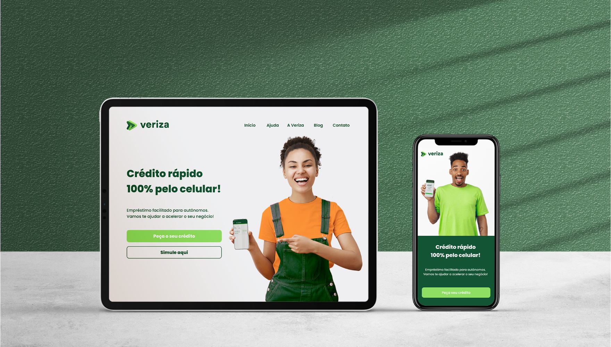
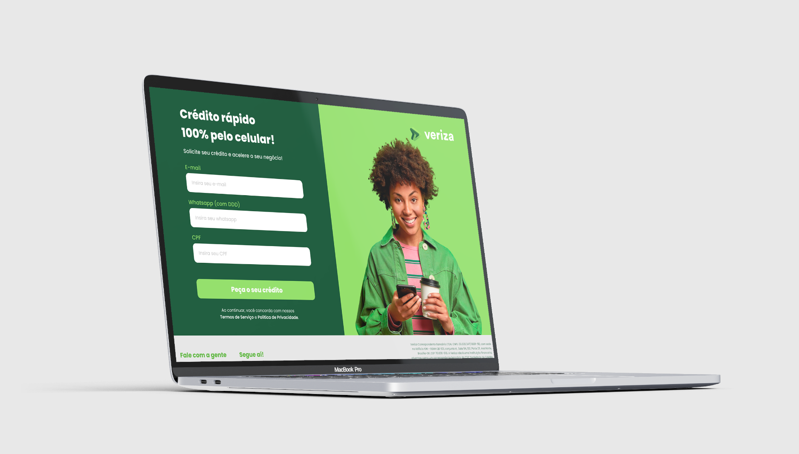
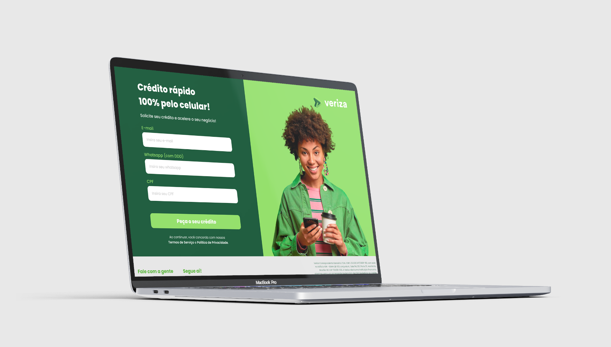

Veriza - Website and Mobile APP

As UX Designer on the core product team, I supported the design,
prototyping, testing, and application implementation of mobile, webpage,
and back-office functions. Veriza is fintech startup in Brazil that uses
technology as a tool to offer credit and financial and transformative
solutions.
-
Restructured the entire user journey and information architecture of
the company’s website and mobile app.
-
Re-designed the user flow and interface of the company’s website and
mobile app.x
-
Revamped the company’s marketing strategies and advertising campaigns
by conceptualizing new social media templates and posts.
 
